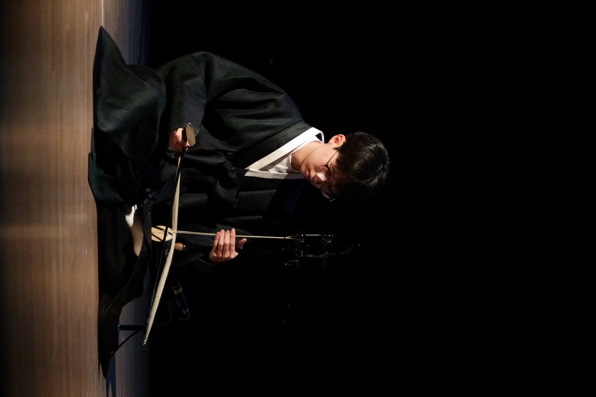

Vision
국악이 누구나 즐기는
국악이 누구나 즐기는
음악이 되는 세상
대중이 공연 관람자 또는 취미 연주자로서 다양하게 접근할 수 있는 서양의 클래식이나 밴드 음악과 달리, 국악은 국공립 악단과 같은 제도적 틀 속에서만 성장해 왔습니다.
전문 연주자가 아닌 일반 대중에게는 국악 공연을 관람할 동기도 부족할 뿐더러, 취미로 즐기기도 어려운 상황입니다.
이에 비록 아마추어일지라도 대학생으로부터 시작해 대중이 만들고 즐기는 국악, 대중이 주도하는 국악의 새로운 흐름을 제시하고자 합니다.
Our Values
전통을 잇고,
전통을 잇고,
함께 나아갑니다
- 핵심가치
- 전통성, 진정성, 접근성
- 미션
- 국악 공연을 통한 대중의 국악 접근성 확대
- 추진방향
- 국악 접근성 확대 및 보급
- 아마추어 국악 단체의 발전에 기여
- 동아리 간 교류의 장 마련
연합 대표 소개
장진형
대표, 악장
2022년
- 고려대학교 정치외교학과 입학
- 고려대학교 국악연구회 해금 수석
2025년
- 서울국악동아리연합 총무
- 고려대학교 국악연구회 악장 겸 타악 수석 (1학기)
- 고려대학교 국악연구회 타악 수석 겸 학술부장 (2학기)
